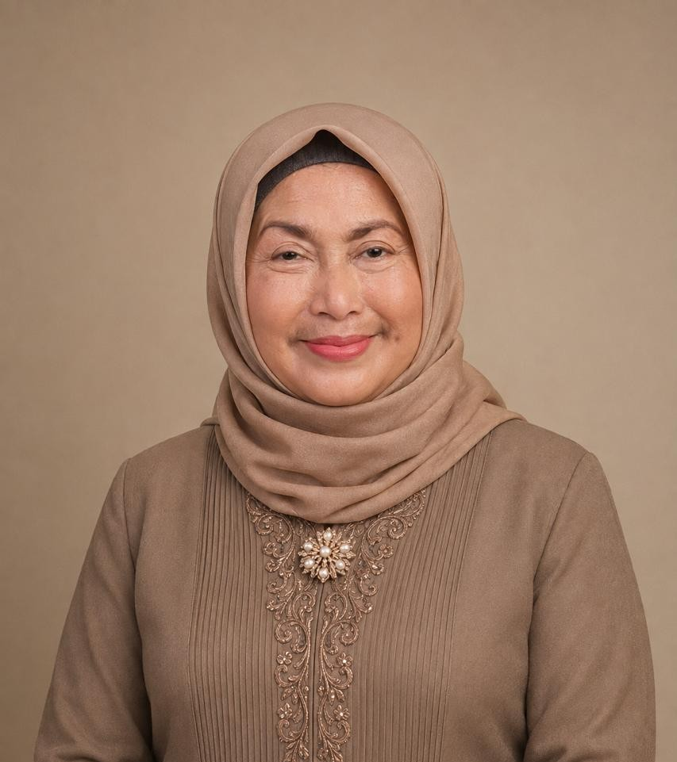
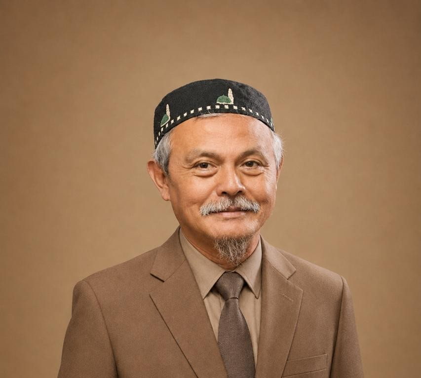

Struktur Pengurus Inti
Jajaran pengurus yang bertanggung jawab atas arah kebijakan, operasional, dan kesejahteraan yayasan.
Bagan Struktur Organisasi
Bagan hirarki struktur kepengurusan Yayasan Panti Asuhan Kuntum Teratai.

Nina Agustina, S.Pd.I.
PembinaPerintis dan Penggagas Panti Asuhan Kuntum Teratai sejak 2004.
Wina M. Siregar, SST.Pa.
Ketua YayasanMemimpin jalannya program, kepengurusan, dan koordinasi yayasan.
Arif M. Siregar, S.E.
SekretarisPengelolaan tata kelola administrasi, surat menyurat, dan legalitas.
Adhani Siregar, S.S.T.
BendaharaPengelolaan akuntabilitas keuangan dan pencatatan dana donatur.

H. Nizar, S.Kom.
PengawasPengawasan berkala terhadap kepatuhan anggaran dan pelaksanaan program.